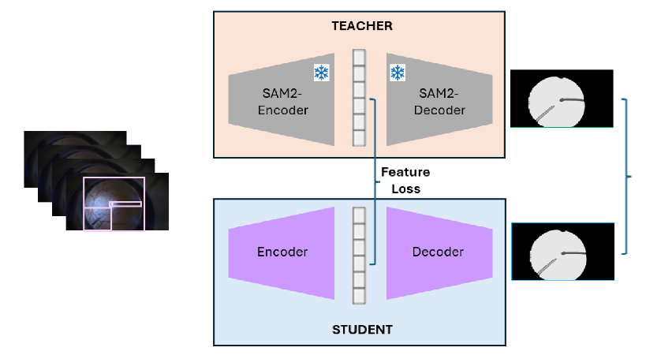
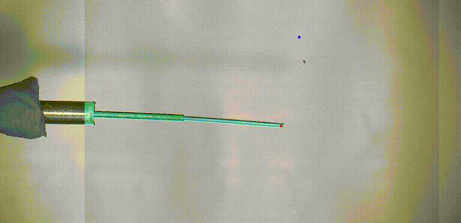

Research Associate (Postdoc)
King’s College London (KCL), School of Biomedical Engineering (Apr 2024 – Aug 2025)
Vision-based semi-automated therapy delivery in eye surgery (NIHR funded):
- Project 1: Segmentation of surgical tools in microscope images from real vitreoretinal surgeries: [Code]
- Developed lightweight deep learning multiclass segmentation models using knowledge distillation from SAM2.
- Trained segmentation architectures (SegFormer, DeepLabV3+, U-Net) with encoders (MiT-B0, MiT-B2, ResNet-18, ResNet-32)
- Implemented hard/soft distillation (CE, Dice, Focal) and feature distillation (MSE, cosine distance, attention maps)
- Improved mIoU by 12.68% with near real-time inference (18 FPS), suitable for surgical interventions.
- Deployed segmentation models at Moorfields Eye Hospital on NVIDIA Clara AGX device and ZEISS surgical microscope. [Code]
- Project 2: Segmentation of surgical tools in microscope images of MOCK surgeries for robotic control: [Code]
- Developed deep learning multiclass segmentation models for surgical tools, robust under different light conditions. (Vid.1, Vid.2)
- Implemented deep learning dense and sparce tracking algorithms for tracking points of interest in microscope (Leica) images.
- Integrated tracking outputs with robotic eye surgery system to enable real-time visual servoing. (Vid.3)
- Optimized model inference speed using JAX and NVIDIA TensorRT (kernel fusion, quantization).
- Prepared and presented technical progress reports to funding committee.
Project leads: Prof. Christos Bergeles, Prof. Sebastien Ourselin
Location: Moorfields Eye Hospital, SIE labs at St Thomas' Hospital, London, UK



